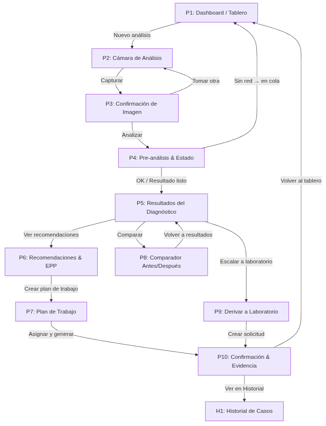

📋 Tabla de Contenidos
- Introducción General del Proyecto
- FASE 1: RESEARCH (Investigación)
- Construcción de arquetipos
- Mapas del sistema actual (as-is)
- Mapas de viaje del usuario (journey maps)
- FASE 2: FUNCTIONAL DESIGN (Diseño Funcional)
- Jobs to be Done
- Definición y selección de funcionalidades
- Definición de especificaciones
- FASE 3: CONTENT DESIGN (Diseño de Contenido)
- Arquitectura de la información
- FASE 4: CX/UX DESIGN (Experiencia del Usuario)
- Wireframing
- FASE 5: UI DESIGN (Interfaz de Usuario)
- Prototipos
Integrantes
El trabajo fue realizado por:
- Santiago Andres Cardona Julio
- Edward Alejandro Rayo Cortés
1. Introducción General del Proyecto
📁 Referencia
El contenido completo se encuentra en: README.md
¿Qué es AgroTechAI?
Este proyecto es como hacer los planos de una casa antes de construirla. Pero en vez de
una casa, estamos haciendo los planos de una aplicación que ayuda a los agricultores a cuidar mejor sus
cultivos.
El objetivo del proyecto es que, a partir de una simple imagen, la app pueda diagnosticar la salud de los
cultivos y ofrecer sugerencias para su mejoramiento. El desarrollo prioriza una interfaz amigable para todo
tipo de usuario (agricultores, agrónomos, etc.) y está diseñada para operar de forma offline, garantizando
su uso en el campo.
¿Para quién es esta app?
Nuestra app está pensada para 4 tipos de personas:
Laura - Ingeniera Agrónoma
Una ingeniera agrónoma consultora que visita muchas fincas y necesita diagnósticos rápidos y precisos
para optimizar su tiempo y ofrecer recomendaciones inmediatas.
Luis - Administrador/Mayordomo
Un administrador que cuida una finca grande, responsable de operaciones diarias y que necesita
herramientas simples pero efectivas para tomar decisiones críticas.
Diana - Productora Independiente
Una productora que tiene su propia finca mediana y busca reducir costos y tiempo de respuesta sin
depender constantemente de consultores externos.
Jhonatan - Técnico de Cooperativa
Un técnico que trabaja en una cooperativa, asiste a múltiples pequeños productores y requiere
herramientas que funcionen offline en zonas remotas.
¿Qué hace la app?
La app ayuda a estas personas a:
- Tomar fotos de las plantas enfermas
- Saber qué enfermedad tienen
- Decidir qué medicina darles
- Hacer reportes para sus jefes o clientes
- Trabajar aunque no tengan internet
2. FASE 1: RESEARCH (Investigación)
2.1 Construcción de arquetipos
📋 Metodología
Contexto: Esta es una propuesta para la creación de una aplicación móvil que ofrezca una
solución de inteligencia artificial al sector agrícola.
Herramientas utilizadas: ChatGPT, Gemini, Claude
Proceso metodológico:
- FASE 1: INVESTIGACIÓN DE ROLES AGRÍCOLAS - Investigación y análisis de todos los
posibles roles/usuarios que podrían beneficiarse de un sistema de análisis de cultivos con IA
- FASE 2: ANÁLISIS Y SELECCIÓN - Análisis de priorización considerando 5 criterios
específicos (potencial de adopción, frecuencia de uso, impacto en resultados, capacidad de pago,
influencia en otros)
- FASE 3: DESARROLLO DETALLADO DE ARQUETIPOS - Desarrollo de perfil completo para
cada arquetipo seleccionado
2. FASE 1: RESEARCH (Investigación)
Resultado - Arquetipos principales identificados:
ARQUETIPO 1
Laura Restrepo - Ingeniera Agrónoma Consultora
- Atiende múltiples fincas
- Necesita diagnósticos rápidos y precisos
- Alta capacidad tecnológica
- Influencia en decisiones de múltiples productores
ARQUETIPO 2
Luis Cardona - Administrador/Mayordomo de Finca
- Responsable operativo de 50+ hectáreas
- Toma decisiones diarias críticas
- Experiencia práctica pero limitada tecnológicamente
- Necesita herramientas simples y efectivas
ARQUETIPO 3
Diana Mejía - Productora Independiente
- Propietaria de finca mediana (20-50 ha)
- Depende de consultores externos
- Busca reducir costos y tiempo de respuesta
- Necesita confianza en las recomendaciones
ARQUETIPO 4
Jhonatan Vargas - Técnico de Cooperativa
- Asiste a múltiples pequeños productores
- Limitaciones de recursos y tiempo
- Requiere herramientas que funcionen offline
- Influencia en adopción comunitaria
2. FASE 1: RESEARCH (Investigación)
2.2 Mapas del sistema actual (as-is)
📋 Metodología
Contexto: Mapeo completo del ecosistema ACTUAL donde los usuarios diagnostican y tratan
problemas en cultivos, SIN tecnología de IA avanzada.
Herramientas utilizadas: ChatGPT, Gemini, Claude
Proceso metodológico:
- FASE 1: INVESTIGACIÓN DEL ECOSISTEMA ACTUAL - Mapeo de actores, herramientas y
flujos de información
- FASE 2: MAPEO DETALLADO DEL SISTEMA AS-IS - Análisis de relaciones y dependencias
- FASE 3: ANÁLISIS PROFUNDO Y VALIDACIÓN - Identificación de gaps y oportunidades
2. FASE 1: RESEARCH (Investigación)
Resultado - Hallazgos principales del ecosistema actual:
ACTORES CENTRALES:
- Agrónomo Asesor Independiente: ~2,500 profesionales con alto poder de decisión
- Administrador/Mayordomo: ~8,000 responsables operativos en fincas medianas-grandes
- Productor Independiente: Diferentes escalas con varying grado de dependencia externa
- Técnico de Cooperativa: Recursos limitados pero alta influencia comunitaria
PAIN POINTS IDENTIFICADOS:
- Dependencia excesiva de consultas presenciales
- Tiempos de respuesta lentos (2-7 días típicos)
- Costos elevados de diagnóstico ($200K-$500K COP por visita)
- Limitaciones de conectividad en campo
- Fragmentación del conocimiento
Métricas del sistema actual:
2-7
Días promedio de respuesta
$200-500K
COP por visita técnica
25-30%
Productores con acceso regular
2. FASE 1: RESEARCH (Investigación)
2.3 Mapas de viaje del usuario (journey maps)
📋 Metodología
Contexto: Visualización completa del proceso que ACTUALMENTE sigue un usuario desde que
identifica un problema en el cultivo hasta que evalúa los resultados SIN nuestro sistema de IA.
Herramientas utilizadas: ChatGPT, Gemini, Claude
Proceso metodológico:
- FASE 1: INVESTIGACIÓN DE JOURNEYS ACTUALES - Mapeo de métodos actuales de
diagnóstico
- FASE 2: PRIORIZACIÓN DE JOURNEYS AS-IS - Evaluación de frecuencia y nivel de
frustración
- FASE 3: DESARROLLO DETALLADO - Journey maps específicos por arquetipo
8 Fases del Journey AS-IS:
- Detección del problema
- Investigación y diagnóstico inicial
- Búsqueda de segunda opinión
- Toma de decisión
- Adquisición de tratamiento
- Aplicación del tratamiento
- Monitoreo de resultados
- Evaluación final y aprendizaje
2. FASE 1: RESEARCH (Investigación)
Resultado - Journey Maps representativos:
Journey Map representativo - Diana Mejía (Productora Independiente):
Situación disparadora: Durante una revisión de calidad pre-cosecha, Diana detecta
manchas negras sospechosas en varios frutos de aguacate, poniendo en riesgo un contrato de exportación.
Tiempo total del proceso actual: 4 a 8 días desde detección hasta aplicación del
tratamiento
Costos principales: $200,000 - $500,000 COP por visita técnica + pérdidas del 15-30% por
retraso
Análisis del Journey AS-IS:
4-8
Días hasta tratamiento
3-5
Semanas proceso completo
15-30%
Pérdidas por retraso
3. FASE 2: FUNCTIONAL DESIGN (Diseño Funcional)
3.1 Jobs to be Done (JTBD)
📋 Metodología
Contexto: Descubrir las verdaderas necesidades de los usuarios a través de la
metodología "Jobs to be Done" (JTBD).
Herramientas utilizadas: ChatGPT, Gemini, Claude
Estructura JTBD: "Cuando [situación], quiero [motivación], para poder [resultado
esperado]"
Proceso metodológico:
- PASO 1: SIMULACIÓN DE ENTREVISTA INTERNA - Adoptar personalidad de cada arquetipo
- PASO 2: EXTRACCIÓN Y FORMATEO - Identificar patrones y extraer JTBD principales
3. FASE 2: FUNCTIONAL DESIGN (Diseño Funcional)
Resultado - JTBD principales por arquetipo:
LAURA
Agrónoma Consultora
"Cuando detecto un síntoma en campo durante una visita programada, quiero obtener un diagnóstico
preliminar confiable en tiempo real, para poder optimizar mi tiempo y ofrecer recomendaciones
inmediatas al productor."
LUIS
Administrador/Mayordomo
"Cuando encuentro algo sospechoso durante mis recorridos diarios, quiero saber inmediatamente si es
crítico o puede esperar, para poder tomar acciones preventivas antes de que se propague."
DIANA
Productora Independiente
"Cuando detecto un problema en mi cultivo, quiero obtener un diagnóstico confiable sin depender de la
disponibilidad de un experto, para poder actuar rápidamente y proteger mi inversión."
JHONATAN
Técnico de Cooperativa
"Cuando visito productores en zonas remotas, quiero poder diagnosticar problemas sin necesidad de
conectividad, para poder brindar asistencia técnica inmediata y confiable."
3. FASE 2: FUNCTIONAL DESIGN (Diseño Funcional)
3.2 Definición y selección de funcionalidades
📋 Metodología
Contexto: Convertir los JTBD en funcionalidades específicas del producto, priorizando
para crear un MVP efectivo.
Herramientas utilizadas: ChatGPT, Gemini, Claude
Proceso metodológico:
- PASO 1: SESIÓN DE IDEACIÓN "HOW MIGHT WE" - Lluvia de ideas para cada JTBD
- PASO 2: DEFINICIÓN Y ESTRUCTURACIÓN - Convertir ideas en funcionalidades
estructuradas
- PASO 3: PRIORIZACIÓN ESTRATÉGICA - Clasificar en Must Have, Should Have, Could Have
3. FASE 2: FUNCTIONAL DESIGN (Diseño Funcional)
Resultado - Funcionalidades priorizadas:
Funcionalidades MUST HAVE (MVP):
30s
Tiempo de Diagnóstico
100%
Funcionalidad Offline
- Diagnóstico por Imagen (DIAG-001) - Análisis de IA de fotografías de cultivos,
identificación de enfermedades, plagas y deficiencias, nivel de confianza del diagnóstico
- Semáforo por Lote (TABLERO-001) - Vista general del estado de todos los lotes, código
de colores: Rojo (crítico), Amarillo (atención), Verde (normal)
- Recomendaciones de Tratamiento (RECO-001) - Sugerencias específicas basadas en
diagnóstico, dosis, productos, timing de aplicación
- Modo Offline (OFFLINE-001) - Funcionalidad básica sin conectividad, sincronización
automática al recuperar señal
- Historial y Trazabilidad (HIST-001) - Registro de todos los diagnósticos y
tratamientos, seguimiento de evolución
3. FASE 2: FUNCTIONAL DESIGN (Diseño Funcional)
3.3 Definición de especificaciones
📋 Metodología
Contexto: Crear especificaciones funcionales detalladas para la funcionalidad más
importante: "Diagnóstico por Imagen".
Herramientas utilizadas: ChatGPT, Gemini, Claude
Proceso metodológico:
- FASE 1: CREACIÓN ASISTIDA DEL BORRADOR - Especificación funcional detallada
- FASE 2: EVALUACIÓN SINTÉTICA - Probar especificación desde perspectiva de usuarios
3. FASE 2: FUNCTIONAL DESIGN (Diseño Funcional)
Resultado - Especificación detallada:
Especificación detallada de DIAG-001: Análisis de cultivo por imagen
ID de Funcionalidad: DIAG-001
Nombre: Análisis de cultivo por imagen
Prioridad: Must Have (MVP)
User Story: Como [Mayordomo/Agrónoma/Productor], quiero tomar una foto de una planta con
síntomas y recibir un diagnóstico automatizado, para poder tomar decisiones informadas sobre
tratamientos sin esperar a un experto.
Criterios de Aceptación:
- Diagnóstico completado en menos de 30 segundos con conectividad
- Funcionalidad básica disponible offline
- Nivel de confianza mínimo del 70% para mostrar resultado
- Soporte para imágenes en condiciones de campo (luz variable)
- Integración con base de datos local de tratamientos
4. FASE 3: CONTENT DESIGN (Diseño de Contenido)
4.1 Arquitectura de la información
📋 Metodología
Contexto: Organizar las funcionalidades para que formen una herramienta coherente y no
un laberinto confuso.
Herramientas utilizadas: ChatGPT, Gemini, Claude
Proceso metodológico:
- PASO 1: ANÁLISIS Y SÍNTESIS HOLÍSTICA - Comprensión de interconexión entre
documentos
- PASO 2: EXTRACCIÓN DE ENTIDADES Y TAREAS CLAVE - Identificar sustantivos y verbos
conceptuales
- PASO 3: SIMULACIÓN DE AGRUPACIÓN - Card sorting sintético por modelo mental
Pregunta crítica: ¿Cómo organizamos las funcionalidades para que formen una herramienta
coherente y no un laberinto confuso?
4. FASE 3: CONTENT DESIGN (Diseño de Contenido)
Resultado - Estructura Principal:
1.0
Dashboard / Semáforo por Lote
Vista principal con estado de todos los lotes, código de colores por riesgo, acceso rápido a "Nuevo
Análisis"
2.0
Diagnóstico & Análisis
Cámara de análisis, pre-análisis, resultados del diagnóstico, recomendaciones de tratamiento
3.0
Historial & Seguimiento
Línea de tiempo, comparador de análisis, exportación de reportes
4.0
Plan de Trabajo
Tareas programadas, recordatorios, calendario de actividades
5.0
Configuración
Reglas y umbrales, plantillas de reporte, preferencias offline
Principios de Diseño Transversales:
- Evidencia primero: Toda acción crítica deja huella (foto/fecha/usuario/ubicación)
- Offline by design: Funcionalidad core sin conectividad, sincronización diferida
- 2-3 toques máximo: Jerarquía plana para evitar menús profundos
- Lenguaje del usuario: Etiquetas simples, evitando jerga técnica
5. FASE 4: CX/UX DESIGN (Experiencia del Usuario)
5.1 Wireframing
📋 Metodología
Contexto: Crear wireframes del flujo más importante: "Diagnóstico por Imagen" - El
camino de mayor valor y frecuencia en campo.
Herramientas utilizadas: ChatGPT, Gemini, Claude
Proceso metodológico:
- PASO 1: SÍNTESIS ESTRATÉGICA - Comprensión holística del producto
- PASO 2: PRIORIZACIÓN DE FLUJOS - Selección del flujo más crítico
- PASO 3: WIREFRAMING DETALLADO - Diseño pantalla por pantalla
Flujo seleccionado: "Diagnóstico por Imagen" - El camino de mayor valor y frecuencia en
campo.
Canvas de Wireflow: Diagnóstico por Imagen
Arquetipo Principal: Mayordomo de Finca
Contexto de uso: En el cultivo, a pleno sol, una mano ocupada, conectividad intermitente
JTBD: "Cuando encuentro una hoja con aspecto enfermo, quiero obtener un diagnóstico
rápido y fiable, para poder tomar acciones antes de que se propague."
5. FASE 4: CX/UX DESIGN (Experiencia del Usuario)
Resultado - Flujo de Pantallas Principal:
P1
Dashboard / Tablero
Propósito: Acceso inmediato a "Nuevo análisis" y priorización de lotes con riesgo
Componentes UI: Header con sincronización, tarjetas de lote por color, FAB "Nuevo
análisis", filtro rápido
P2
Cámara de Análisis
Propósito: Capturar imagen clara y ligera de hoja/síntoma
Componentes UI: Vista cámara completa, guía de encuadre, botón capturar grande,
controles flash/cancelar
P3
Confirmación de Imagen
Propósito: Verificar calidad antes de procesar
Componentes UI: Preview de foto, botón "Analizar", botón "Tomar otra"
P4
Pre-análisis & Estado
Propósito: Informar estado de procesamiento y aplicar reglas rápidas disponibles
localmente
Componentes UI: Indicador de progreso, mensaje de estado, opción de cancelar
P5
Resultados del Diagnóstico
Propósito: Mostrar diagnóstico principal con nivel de confianza
Componentes UI: Diagnóstico principal, nivel de confianza, síntomas detectados, botones
de acción
5. FASE 4: CX/UX DESIGN (Experiencia del Usuario)
Resultado - Flujo de Pantallas Principal:

Pantallas principales: Dashboard, Cámara, Confirmación, Resultados,
Recomendaciones, Plan de Trabajo e Historial
6. FASE 5: UI DESIGN (Interfaz de Usuario)
6.1 Prototipos de Alta Fidelidad
📋 Metodología
Contexto: Para que un agricultor o agrónomo confíe en un diagnóstico de IA, la interfaz
debe sentirse tan profesional y precisa como la tecnología que la impulsa.
Herramientas utilizadas: Stitch (generación de UI de alta fidelidad), Gemini (modelo de
lenguaje)
Enfoque: Intuitividad y estética, credibilidad del producto, usabilidad para todos los
niveles técnicos
Objetivo: Para que un agricultor o agrónomo confíe en un diagnóstico de IA, la interfaz
debe sentirse tan profesional y precisa como la tecnología que la impulsa.
Resultado - Prototipo Final Completado

Pantallas principales: Dashboard, Cámara, Confirmación, Resultados,
Recomendaciones, Plan de Trabajo e Historial
Pantallas Principales Incluidas:
- Dashboard / Tablero Principal - Vista semáforo con lotes categorizados por colores
- Cámara de Análisis - Interfaz optimizada para campo con guías visuales
- Confirmación & Pre-análisis - Preview y opciones claras de acción
- Resultados del Diagnóstico - Diagnóstico destacado con nivel de confianza
- Recomendaciones - Tratamientos sugeridos con dosis específicas
- Plan de Trabajo - Lista de tareas y calendario de actividades
- Historial de Casos - Línea de tiempo y comparador de evolución
Características de Diseño Visual:
Paleta de Colores
- Verde primario: Agricultura
- Rojos/Amarillos: Alertas
- Grises neutros: Texto
Usabilidad
- Tipografía: Sans-serif legible
- Botones: Grandes (44px mínimo)
- Espaciado: Generoso para uso con guantes
- Responsive: Diferentes tamaños de smartphone